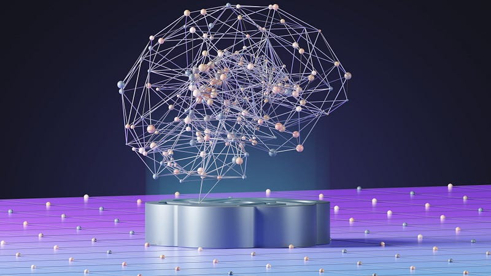

 The talk around AI is a hot topic nowadays. ChatGPT is producing spectacular results every day. YouTube recommendation is better than ever. Self-driving cars are becoming common on the road. It seems that AI is taking over the world. But how does AI work? How does AI learn everything at the level of expertise? How can ChatGPT be an expert in both Science and History and you can’t even study one?
I have been working on Artificial Intelligence for quite a while now. So, in this article, I will first explain the workings of AI. Then, I will discuss the life lessons from it. I will also share the tips from my IIT preparations, and we will derive a systematic method to learn any skill. This article is based on my understanding of AI and my impression of books on productivity, like Atomic Habits and Deep Work.
Introduction
AlphaZero, an AI-based chess bot, trained itself in twenty-four hours to reach a superhuman level of play in the game. It beat or drew humans and other algorithm-based bots in all the games it played. It didn’t lose even once.
It is just one example of artificial intelligence learning things at a breath-stopping speed and getting the grandmaster level of expertise. We see several other examples around us daily, from Google Assistant to self-driving cars. But the question arises: how can machines learn things this fast with such perfection while humans take years? Well, the answer can be as simple as this: they are machines.
An AI-based chess bot differs from an algorithm-based one because we don’t have to tell it what to do in every situation. It is shown hundreds and thousands of games and learns to play by just watching them. A more straightforward example would be image recognition systems. How does an AI know by looking at a picture that it’s a dog or a cat?
We don’t give them explicit instructions on how to recognize an animal. We show the model millions of labeled pictures of dogs and cats. By labeled pictures, I mean this: we show the model a picture of a dog and tell them the answer that it’s a dog. Then, we show another picture of a cat and tell them it’s a cat. We keep doing that a million times and our model will learn to distinguish a cat from a dog. Now, if we show it a picture of an animal it has never seen. In that case, it will still tell you the answer with reasonable accuracy.
In a nutshell, we don’t tell them the method to go from question to answer for a given task. We will show them the question and then the answer millions of times, and it automatically develops the connection between question and answer. This task can be as simple as finding the roots of a quadratic equation or as tricky as finding the energy eigenvalues for any arbitrary Hamiltonian.
How do Machines Learn?
Machines learn using Machine Learning and Deep learning algorithms. We represent the Deep Learning algorithms by Neural Networks, which are said to be inspired by the neurons in our brain. You can learn more about Deep Learning from this video series. The mathematical details are unimportant for the general audience.

Neural Network example. (source: Geeksforgeeks)
So, as I mentioned earlier, the Neural Network is shown millions of examples in the form of question-answer pairs. These examples are a set of numbers called vectors. For instance, in our image recognition system, we can assign the color of a pixel a number in the question. And we give number 1 for the answer dog and number 0 for the answer cat.
Now, a Neural Network works by creating a non-linear relation between the question vector and the answer vector using a set of adjustable parameters. The unknown path between the question and answer is found by fine-tuning a set of parameters. Well, that is not easy to understand.
The problem is analogous to the process of making tea. You are given the inputs as sugar, tea leaves, and milk. The answer, or the output, is a perfect tea. Now, you need to find a way, a path from the input to the output. This path can be mapped to the quantities of each item you will take. These quantities are the adjustable parameters. We can tune these parameters to find the answer. (I am oversimplifying it and going away from the essence.)
Here is how a Neural Network works: at the beginning, it will assign random values to the adjustable parameters and predict the answer. Now, the value is compared to the actual answer. The network will see how badly it has done. It will check the distance between its prediction and the actual answer, and based on the distance, it will change the adjustable parameters. In our teapot analogy, the chef named Nureal Net will take random measures of sugar and milk and prepare the tea. After preparing the tea, it will taste it. And based on how bad it tastes, the chef will change the value of quantities. It does the same job millions of times. Each time, make predictions, compare with the actual results, and adjust the parameters until the prediction equals the actual result.
This process of showing question-answer example pairs and adjusting the parameters to the optimal values is called training. Once the training is done, our neural net can answer the question it has never seen before. So if you ask our chef to make coffee, it will make a perfect coffee for you.
We can draw real-life conclusions now that we have understood the neural network’s working process.
Don’t be a machine!
I want to ensure one thing: I am not asking to be a machine. Machines are superior to us, and we can never be like machines. But I want to draw your attention to a straightforward fact: Neural Networks are inspired by the neurons in our brain. Our brain works essentially the same way as the neural network. And we learn the same way as a neural network learns.
You can ask your mother how she learned to make such delicious food. She would tell you the process. The secret is to put the right amount of the ingredients. And how did she learn the right amount? She started with a random guess. But after every meal, she got feedback from her family, like the food was less salty or more salty. And after the feedback, she would adjust the amount of salt. It happened day after day until she learned the right amount of spices.
The point is by learning the method of Neural Networks, we can effectively trick our minds to learn new things. We can develop a similar learning algorithm on our own.
But then what will the difference between us and the machines? The difference is that the machines are faster than us and can perform more actions simultaneously. But we are already more intelligent than machines. We don’t need to look at a picture of a cat a million times to recognize it as a cat. We don’t need a million iterations to learn something. We can learn it in a few hundred iterations.
Beat The Inertia
The first lesson from analyzing the process is that starting the training is the most important thing. Most of us think we need to know at least something to learn a skill. Or we need a proper teacher to start learning a skill. So here is the critical point: you need nothing but dedication to begin learning the craft. You don’t need the right time and the right place. Today, with the internet’s and YouTube’s power, you can learn anything from anywhere. So don’t overthink about it; just start, and you will see the pieces falling into place.
The other crucial thing I learned from Machine Learning is in the first few iterations, the errors will be prominent, and the predictions will be horrible. After a hundred iterations, your Neural Network may recognize a picture of a cat as a snake. The same will happen with humans when we start learning a new skill. The results will not show directly after one or two days. We will be horrible at the thing at first. But we should not be demotivated by that. We should stick to the process and keep working on it. As the time progresses, we will get better. Even if we don’t see immediate results, we should keep hustling.
The third thing is that the whole process is probabilistic. Our Neural Network can be flawed. It will make the correct prediction 99% of the time, but 1% is not improbable. Even after training over a million examples, it can occasionally give you a wrong prediction. ChatGPT gives the wrong answer sometimes. But it doesn’t mean that the machine is every time wrong. It will provide good results for the next question.
Similarly, if you are performing below your level in your field, it doesn’t mean you are not good enough. It means you are going through a rough phase and will be fine next time. Remember, Virat Kohli didn’t score a century for nearly three years.
Feedback Is Crucial
I closely explained the working process of a neural network. At the end of every iteration, it compares its prediction to the actual answer. It sends back the message to adjust the parameters. This process is called Backpropagation. In simple words, it is a feedback loop.

The feedback loop of learning: Source: Crowdmark
It can directly be applied to learning a skill in real life. At the end of every day, you will compare what your current status is and what it should be. Based on the difference between these two, you might see what’s wrong with the process, and you fix that. You have to ensure that you are going in the right direction after specified time steps.
When preparing for the IIT entrance exams, I had a plan for the preparation. After every month, I checked that this much portion should have been covered by now. And if that had not been covered, I reviewed what went wrong in the month’s preparation. I could quickly identify the mistakes and ensure I didn’t repeat the same mistakes.
We can make these checks more often. We can put these feedback loops every week or even daily. For example, my perfect day would be a day that has an hour of exercise, some studying, some book reading, some writing, etc. I would write that on a paper and put it on my wall. At the end of every day, I check how my day went and how far it was from the ideal day. Based on the distance, I would ask why it was the case. Then, I changed my routine and did the same thing the next day. I will do that repeatedly until my days start going like the ideal day.
The point is making a timetable is not enough. The timetable will never work. You should change your timetable daily to maintain its effectiveness. Every time your plan fails, you should ask questions about why it failed and make changes.
Quality or Quantity
This question has been repeatedly asked: whether to try and do everything perfectly or do it many times with some improvement every time.
When we make a routine (or a timetable), we try to follow it precisely in the first few days. But after a few days, we forget the timetable and return to the lazy and unproductive routine, which happens because we try to make a radical change with a motivation to follow perfectly. This motivation diffuses quickly, and suddenly, the perfect timetable seems like a load.
We can apply a different approach to it, the method of neural networks. When your motivation fades, go on with your regular life. But every evening, compare your day with your timetable and ask why it differs from the timetable. You will get some answers like: because I spent too much time with the gallery after coming from the dinner. So the next day, you try to avoid just that one thing. Practice this for a week. Then, ask the same question and identify and remove another issue. You go on doing it. You do that for a month, and you will notice that your day looks just like your timetable without the extra motivation of perfection.
Here is the Formula
What do you need to make your day perfect? What do you need to learn something using the machine learning algorithm? Let’s list the things at the final:
- A clear picture of the end result.
- A set of adjustable variables.
- A timely feedback mechanism.
- Thousands of repetition, deliberate practices.
To begin to learn something, you need a clear goal. The neural network needs an example answer to compare with at the end of every iteration. You need a clear goal to compare your progress with at the end of a specified time step. You need to be clear about what you want to be to check how far you are from becoming your dream person. So, when starting something new, always be clear about what you want to be. You can either idealize a person or write goals on your wall.
Secondly, you need a tracking or constant feedback system in our system. This feedback should be independent of the system. Our performance often influences our feedback. For example, if you want to lose weight. Your feedback system would be to check your weight every Sunday. But if you are stress-eating and afraid of the results, you don’t go and measure your weight. And this whole system falls out. You need to check your weight no matter your mood.
That is where regular mock tests and exams in coaching and universities help. They encourage you to take the tests to get feedback about how you are doing in the journey to pass the exam. These tests are often compulsory and are independent of your mood.
Thirdly, you need adjustable variables. That means you need to find out what to change after you get your feedback. For example, after getting the results of your tests, you find out that your Physics marks are good, but your Chemistry sucks. That means that you need to give extra time to Chemistry, and you can reduce your time on Physics.
The fourth point means that you need to repeat this same process thousands of times. Giving just one mock test won’t help. You must take a full-length mock test every week even if you still need to complete the syllabus. You must do it until the day of your exam. That’s what got me to IIT.

Thanks for the image.
Applications
This process has a lot of applications for various age groups and almost everything in life. But primarily, it can be used for the optimization process. Work-life balance is an excellent example. You need to spend more time at work to earn more grades or money. But you should spend more time with your family to maintain your mental health. You can use the same process to determine precisely what proportion of time you should divide to have a happy wife and handsome chances of promotion.
Students can use this method to achieve their goals and rank well in competitive exams. I used this method while preparing for the IIT entrance exam. I am currently studying in one of the top three IITs (that ranking is subjective, but I rank IITM as third.) So, it’s a trusted and recommended-by-toppers strategy.
References
- 3b1b’s excellent video series on the working of Neural Networks: https://www.youtube.com/watch?v=aircAruvnKk&list=PLZHQObOWTQDNU6R1_67000Dx_ZCJB-3pi
- Veritasium: How to become an expert: https://www.youtube.com/watch?v=5eW6Eagr9XA&t=708s
- Mark Rober: How to learn anything https://www.youtube.com/watch?v=9vJRopau0g0
- Book: Atomic Habits by Jams Clear and his Ted Talk here: https://www.youtube.com/watch?v=U_nzqnXWvSo
- Huge, if true: AI art https://www.youtube.com/watch?v=NiJeB2NJy1A
- Book: How To Become A Straight-A Student and Deep Work by Cal Newport